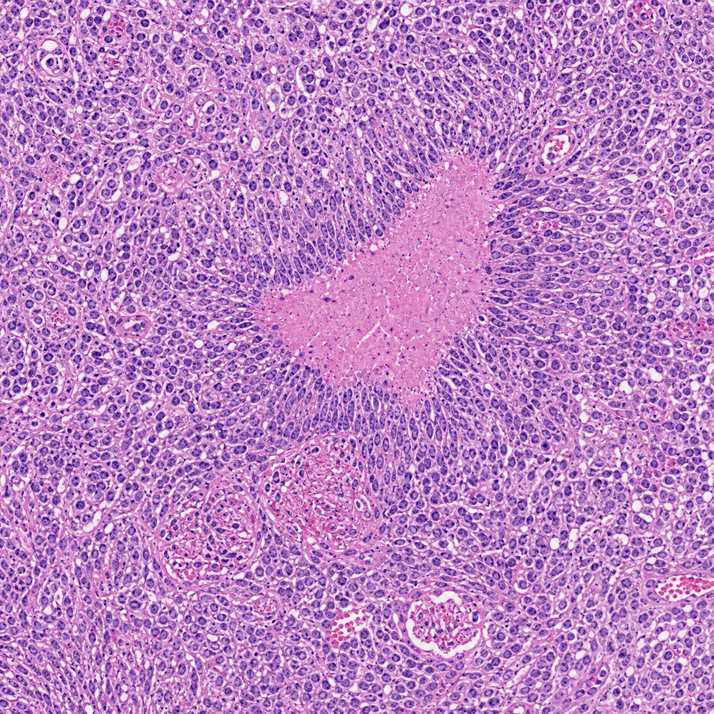

- Pattern
- Magnification
- Stain
- H&E

Atlas browser
CNS Tumor Slides
Synthetic educational images only. They are not patient material and should not be used for clinical diagnosis.
Comparison
Pattern-Based Review
Use the slide set to compare architecture before drilling into cytology: palisades, rosettes, whorls, halos, vessels, necrosis, inflammation, and sellar epithelial patterns.
Necrosis and vessels
Glioblastoma highlights pseudopalisading necrosis and microvascular proliferation.
Rosette-like structures
Medulloblastoma and ependymoma contrast Homer Wright-like rosettes with perivascular pseudorosettes.
Whorls and calcification
Meningioma emphasizes meningothelial whorls and psammoma bodies.
Glial texture
Pilocytic astrocytoma and oligodendroglioma show classic low-grade architectural clues.
Non-neoplastic injury
Demyelinating plaque, infarct, and abscess contrast macrophage-rich injury patterns.
Sellar and vascular lesions
Pituitary adenoma, craniopharyngioma, AVM, and cavernous malformation broaden the CNS differential.
Evaluation
Accuracy Audit
Detailed analysis of the synthetic pathology images generated for this atlas. Evaluates biological realism, common AI artifacts, and limitations compared to real patient slides.
Glial Tumors
Pseudopalisading necrosis is well-represented, but microvascular proliferation can lack precise endothelial layering. High cellularity and atypia are captured effectively.
Embryonal Tumors
Homer Wright rosettes capture the "small round blue cell" look nicely. However, individual apoptotic bodies and mitotic figures occasionally appear slightly cartoonish upon zooming in.
Meningeal Tumors
Whorls and psammoma bodies are remarkably accurate in architecture. High magnification nuclear features (e.g., pseudoinclusions, delicate grooves) can sometimes be slightly blurry.
Vascular & Degenerative
Vascular malformations accurately show varied wall thickness. Degenerative stains mimic silver patterns well, though plaque distribution may lack typical cortical spacing rules.
Inflammatory Lesions
Neutrophils and macrophages show correct general tissue distribution and clustering. On closer inspection, individual inflammatory cell borders may merge artificially.
Common AI Artifacts
Noticeable artifacts include blurring at very high magnification, overly homogenous chromatin textures, and occasional repeating structural patterns or "hallucinated" pseudo-cells.
Use note
Built for Teaching, Not Diagnosis
Each field is AI-generated for atlas-style learning. Pair with verified references, faculty review, and real slide sets for formal training.